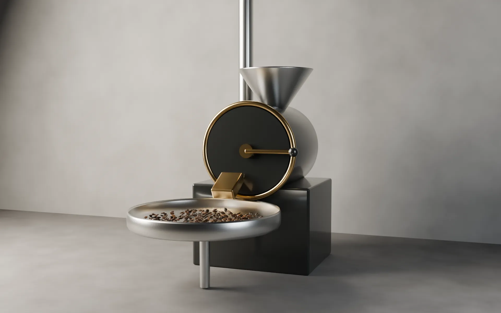

エチオピア ゲデオ
朝の刻の豆ETHIOPIA ・ GEDEO ・ 水洗式 ・ 標高2,000m
柑橘、紅茶、はちみつ。冷めるほど甘くなる。
次の焙煎：—
1,300円
Beans & roast log
店で出している6種類の豆です。焙煎は月曜と木曜。焼いてから3日目から14日目のあいだにお届けします。100gと200gから選べます。
ETHIOPIA ・ GEDEO ・ 水洗式 ・ 標高2,000m
柑橘、紅茶、はちみつ。冷めるほど甘くなる。
次の焙煎：—
KENYA ・ NYERI ・ 水洗式 ・ 標高1,800m
カシス、トマト。酸味がはっきりした浅煎り。
次の焙煎：—
COLOMBIA ・ HUILA ・ 水洗式 ・ 標高1,700m
黒糖、りんご。甘さと酸味のちょうど真ん中。
次の焙煎：—
GUATEMALA ・ ANTIGUA ・ 水洗式 ・ 標高1,600m
ミルクチョコ、ナッツ。牛乳にも合う。
次の焙煎：—
ETHIOPIA ・ COLOMBIA ・ INDONESIA
三つの刻の豆を合わせて、中深煎りに。迷った時の一杯。
次の焙煎：—
INDONESIA ・ SUMATRA ・ スマトラ式 ・ 標高1,400m
ハーブ、ビターチョコ。重く、長く残る。
次の焙煎：—

Roast log
月曜は朝と昼の豆、木曜は夜の豆と飲み比べの豆を焼きます。焙煎は閉店後なので、その日の分は22時を過ぎてから載ります。
| 焙煎日 | 豆 | 焼いてから |
|---|---|---|
| — | 読み込み中 |
焙煎の翌日に発送します。送料は全国一律500円、3,000円以上で無料です。
豆のままお送りします。挽く場合は、店頭でお声がけください。
同じ豆を店頭でも売っています。50gから量り売りします。